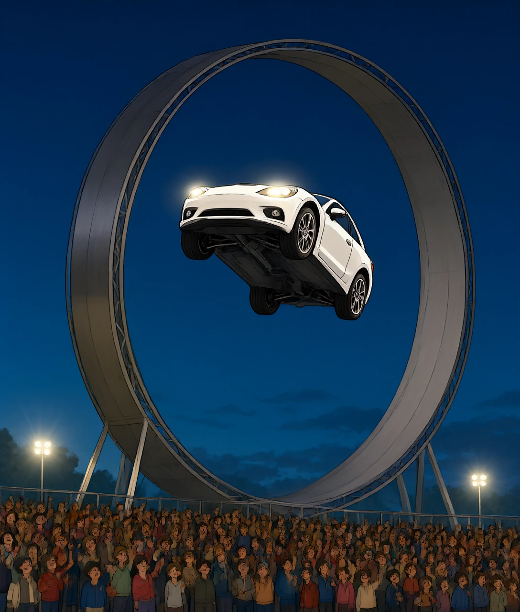
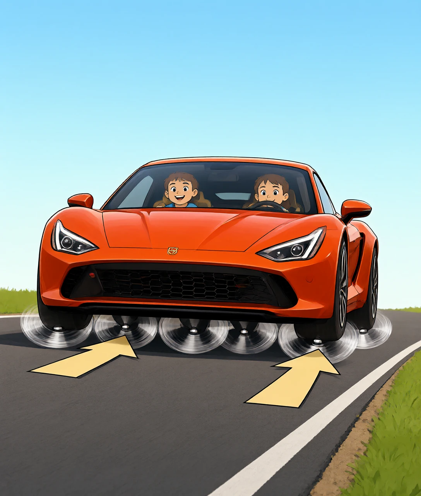
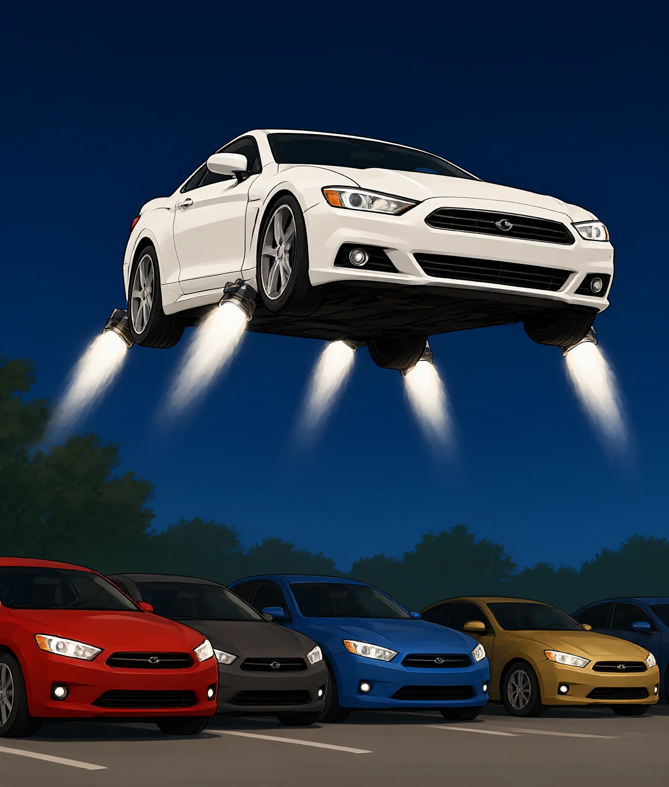
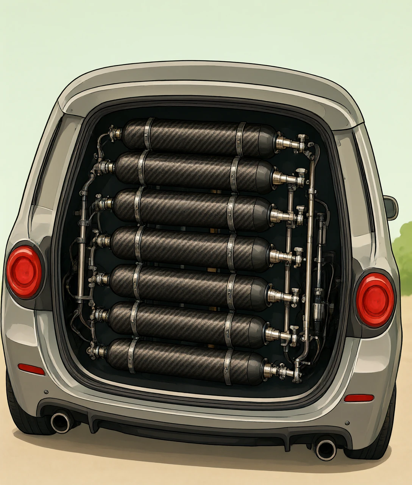
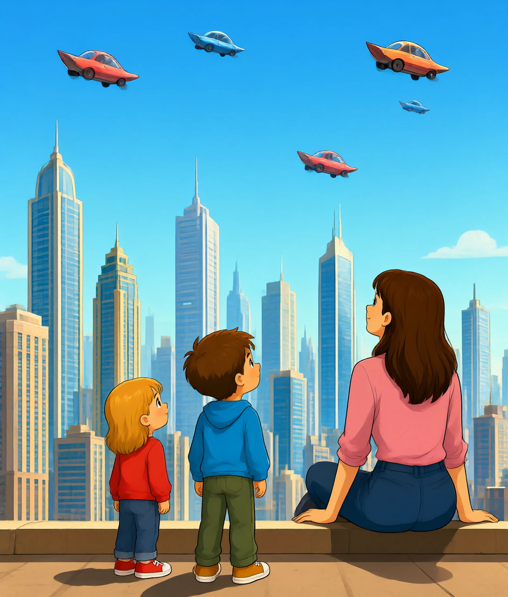

马斯克的新跑车，一个晚上演了两场物理魔术
2026 年 10 月 15 日，晚上。
美国得克萨斯州的一片空地上，立着一条巨大的环形轨道，像一个竖起来的过山车。
一辆白色的跑车开上去了。然后，它开始往上爬——车顶朝下，四个轮子朝天，整辆车倒了过来。
它就这么倒着往上开，一直爬到 21 米高，大约七层楼。
接着，它从轨道上松开，往下掉。就在快要落地的一瞬间，车身四周喷出一片白雾，它减速、停住，稳稳站在地上。
还没完。它又冲向五辆停着的汽车，腾空而起，在空中翻了个身，从车顶上飞过去，离地 7 米，然后四轮着地。
现场的人全都站起来了。马斯克在台上说了一句话：
「这一次，是真的。」

问题来了：车这么重，凭什么能吸在轨道下面不掉下来？又凭什么能飞起来？
答案里没有一点魔法。只有两个你其实早就学过的物理原理——只是从来没人把它们装到一辆车上。
先说倒着开这件事。
你可能会想：是不是车底装了磁铁，吸在轨道上？
不是。轨道不是铁的，车底也没有磁铁。
真正把车按在轨道上的，是空气。
1车底装了一整套大功率风扇。
2风扇一开，就把车底和轨道之间那层薄薄的空气往外抽。
3空气被抽走，车底那一片就变成了「半真空」——压强变低。
4可车顶上方，还是普普通通的大气压。
5于是，上面有大气压往下按，下面却「顶不上劲」——车就被死死按在了轨道上。
这跟你家浴室墙上的吸盘挂钩是同一个道理。吸盘能挂住毛巾，不是因为胶水黏，是因为你把里面的空气挤出去了，外面的大气压把它压在墙上。
大到你不敢相信：每平方厘米，大约压着 1 公斤的空气。
你伸出一只手掌，面积大概 150 平方厘米。也就是说，你的手心上面，压着大约 150 公斤的空气——比两个你还重。
那你为什么没被压扁？
因为你身体里面也有同样大的压力，里外顶住了。就像气球里吹满了气，外面的大气压就压不扁它。
特斯拉说，这套风扇系统能产生大约 2 G 的吸力。什么意思？就是能把车按出相当于两倍自重的抓地力。
而普通轮胎靠橡胶摩擦，最多也就 1.26 G。
也就是说：用风，比用橡胶还「粘」。

再说飞。
车上装了大概 10 个喷口，分布在车身四周。它们喷出来的，是高压空气——注意，不是火。
为什么喷气能让车飞起来？
因为牛顿第三定律：你给空气一个向下的力，空气就还你一个向上的力。
你用力往下推空气，空气就用力往上推你。推得越猛、推得越多，你就越往上走。
这跟气球撒手就乱飞是一个道理——气球里的气往后喷，气球就往前冲。
那这股劲有多大？
特斯拉公布的数字是：总推力超过 80 千牛。
80 千牛，差不多是 8 吨的力。而这辆车大概 2 吨重。
也就是说，推力是车重的 4 倍——足够把它顶起来，还绰绰有余。
车里塞满了碳纤维缠绕的高压气罐，加起来大约 600 升。
特斯拉的说法很直接：车里每一个能用的空腔，都塞满了气罐。
这些气罐和 SpaceX 火箭上用的是同一种。用完之后不用加燃料，车自己会给自己充气——像打气筒一样，把空气重新压回罐子里。
还有一个细节：喷流的速度超过了音速。所以照片里能看到喷流边缘有一圈明亮的波纹——那是超音速气流特有的「激波」，跟战斗机突破音障时的白雾是同一种东西。

你可能会问：火箭都是烧燃料的，喷出来是熊熊火焰，那才叫猛。为什么这辆车只用压缩空气？
选压缩空气，不是因为它强，是因为它安全、简单、能重复用。
但每一种选择都有代价。
这里有个绕不过去的坎：
推力 = 每秒喷出去多少气 × 喷得多快。
气罐里的气是有限的。喷得越猛，用光得越快。
所以这辆车的「飞」，是几秒钟的腾空，不是像直升机那样在天上转半天。特斯拉没有公布一罐气能飞多久——这个沉默本身就说明了问题。
想飞久一点，只有两条路：
A带更多气。可是气罐很重，车会变重，反而更难飞。
B烧燃料。可是那就不安全了，也不可能让普通人开上路。
这就是为什么「飞行汽车」喊了一百年，还是没真正普及——能量带得越多，车越重；车越重，越难飞。这是个死循环。

特斯拉说，2028 年开始生产。一共三个版本：
性能版：普通的快车，加速已经快得离谱。
推力版：加了尾部推进器，0 到 96 公里只要 0.9 秒。
火箭版：全身 10 个喷口，真的能飞，但只能坐一个人。
价格呢？性能版订金 5 万美元，推力版 25 万美元，火箭版只接受邀请——意思是你想买也买不到。
最有意思的是马斯克自己说的话：
「我不确定它在所有地方都合法，但总会有人能拥有这样的车。」
这句话其实很诚实。一辆能在马路上飞的汽车，不只是技术问题——它飞起来会不会撞到电线？掉下来砸到人怎么办？谁来发驾照？
所以更准确的说法是：这不是一辆「飞行汽车」，是一辆「会跳的跑车」。
它证明了一件事：让车飞起来，技术上已经做到了。难的不是飞，是怎么安全地、便宜地、合法地飞。
